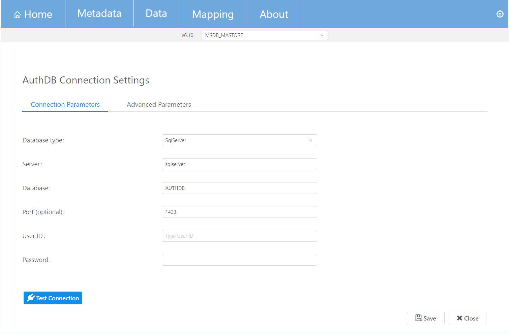

This mask is similar to AUTHDB_CONFIGURATION screen, with the addition that now Admin can edit/change the existing AuthDB configuration and the advanced parameters (through Advanced Parameters tab) of the database connection. If Admin changes the AuthDB details, for instance the Database type, then a modal will appear (similar to second screenshot of AUTHDB_CONFIGURATION) to initialize the AuthDB (in case it is not already initialized).
